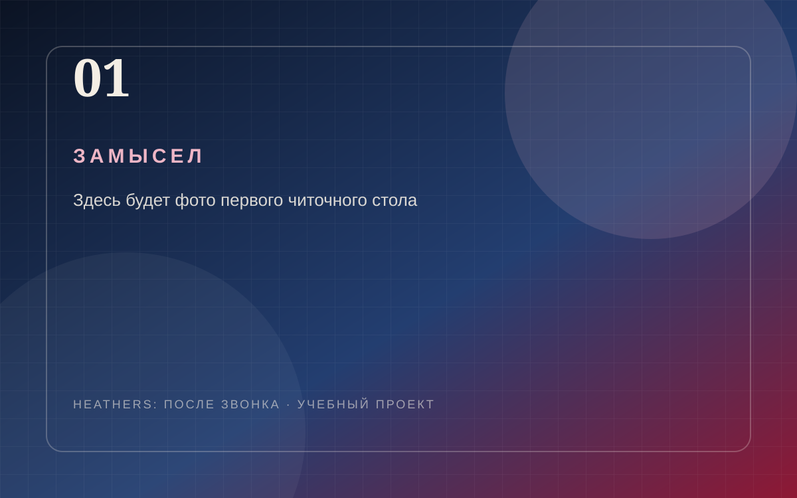
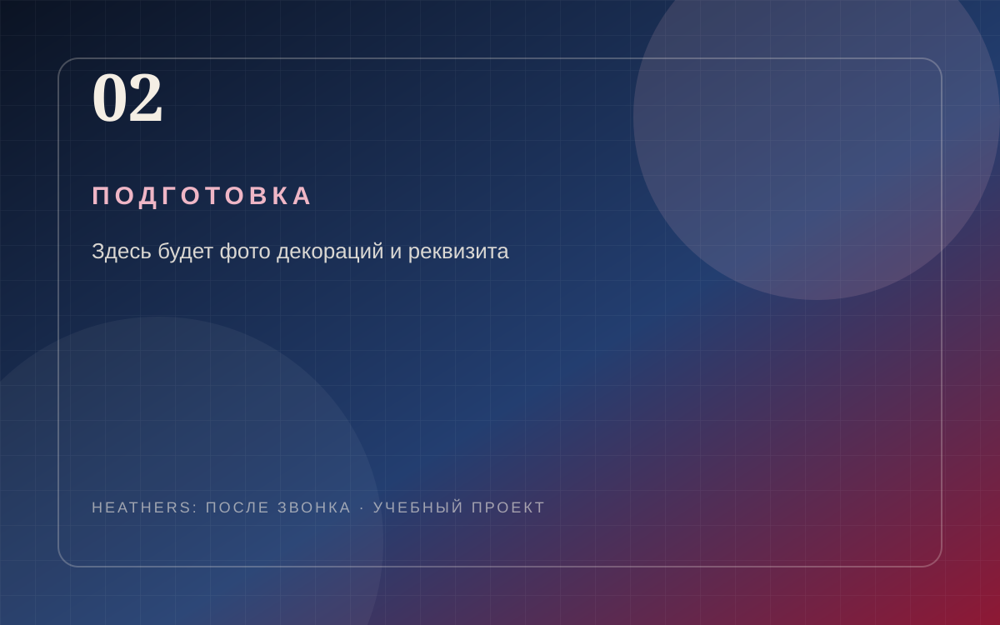
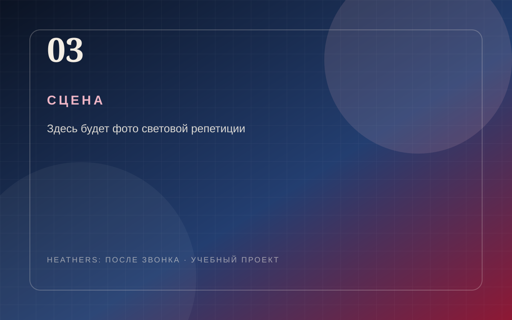
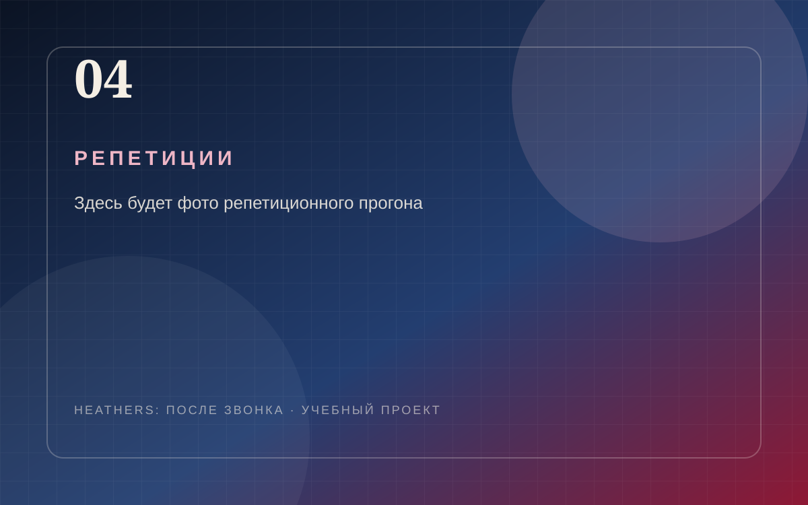

02 / Путь к премьере
Пять шагов — и каждый меняет следующий.
Мы не собирали спектакль из независимых блоков. Решение, принятое на одном этапе, становилось ограничением или возможностью для следующего.
01
24 февраля — 1 марта
Замысел
На первом чтении мы сознательно не пытались придумать «маленькую копию» Heathers. Команда взяла за отправную точку сам механизм истории: среда, где статус считывается мгновенно, а желание быть принятым легко превращается в страх потерять место.
Именно здесь родилось решение перенести действие в условную школу, которую зритель узнаёт по деталям, а не по декорации целиком. Поэтому будущая сценография должна была быть лёгкой, перестраиваемой и пригодной для быстрых переходов между общими сценами и личными монологами.

02
2 — 8 марта
Подготовка
Когда концепция определилась, режиссёр Ева Морозова разделила материал на короткие игровые блоки. Музыкальные номера стали не «остановкой действия», а точками, в которых меняется власть между персонажами. Это потребовало от актёров работать одновременно с текстом, пластикой и ритмом сцены.
Параллельно художница Полина Громова собрала систему из школьных шкафчиков, стульев и мобильных рам. Мы специально отказались от большого количества предметов, потому что хотели, чтобы зритель видел процесс перестройки и чувствовал: за красивой картинкой постоянно остаётся работа команды.

03
9 — 22 марта
Работа над сценой
После первых прогонов стало понятно, что физическое пространство должно подсказывать актёрам правила игры. Мы добавили линию света, которая делит сцену на «территорию группы» и «территорию выбора». Стоило персонажу пересечь её — зритель сразу видел изменение отношений, даже без дополнительного текста.
Следом появилась система быстрых перестроений. Сцена собиралась за считанные секунды, а актёры не уходили за кулисы надолго. Благодаря этому переходы стали частью истории, и команда перестала воспринимать техническую работу как паузу между сценами.

04
23 марта — 12 апреля
Репетиции
Репетиционный период стал проверкой всех ранних решений. Мы специально чередовали прогоны отдельных сцен с полными запусками: так команда замечала не только ошибки внутри эпизода, но и усталость, которая меняла темп всего спектакля. После одиннадцатой репетиции убрали длинную паузу в середине первого акта.
Последняя неделя прошла почти без новых идей. Вместо этого мы повторяли уже найденное: скорость смены света, точность перестановки предметов и реакцию актёров друг на друга. К генеральной репетиции спектакль перестал «искать форму» и начал выдерживать её от начала до конца.

05
18 апреля
Премьера
В день премьеры команда пришла на площадку раньше зрителей почти на четыре часа. На сцене проверили каждый источник света, расставили предметы в стартовых позициях и ещё раз прошли самые быстрые перестроения. После технического прогона мы ничего не «улучшали» — только возвращали спектаклю уже найденный темп.
Первые минуты премьеры показали, зачем были нужны все предыдущие этапы. То, что начиналось как идея о школьной иерархии, стало цельной камерной историей: пространство, музыка, движение и актёрская работа начали говорить одним языком. Занавеса почти нет — вместо него остаётся открытая сцена после финальной реплики.